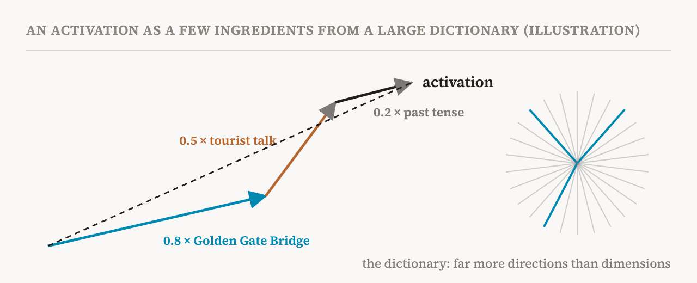
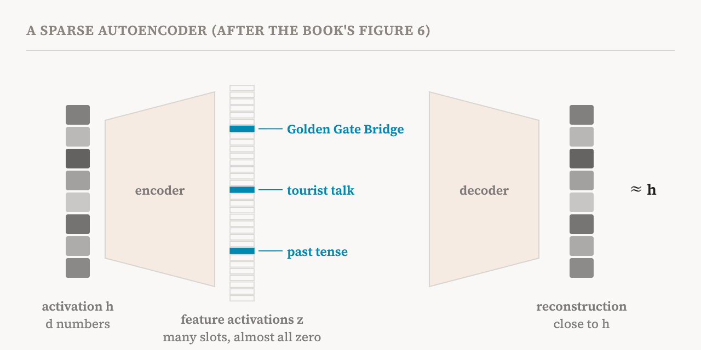

Part 8 left us with a puzzle. If models really store many more features than they have dimensions, by letting features share space, then the features cannot be read off the neurons. They have to be pulled apart somehow. This part starts the group on finding features. It covers the opening of the book's sixth chapter and sections 6.1 and 6.2 (pages 31–34): the old problem of sparse coding, and the tool that turned it into the field's main workhorse, the sparse autoencoder (SAE).
An idea from neuroscience
The problem is older than language models. In 1961, the neuroscientist Horace Barlow proposed that brains represent information with sparse signals, an idea others developed over the following decades: at any moment, only a few out of many available units are active, and each stands for something specific. In 1996, Bruno Olshausen and David Field tested a version of this on natural images. They asked a computer to find a set of basic image patches such that any small piece of a photograph could be rebuilt from just a few of them. The patches it found looked strikingly like the receptive fields of cells in the primary visual cortex, the first area of the brain to process what the eyes see: small, oriented edges and bars.
At the same time, researchers in signal processing were studying how to write a signal as the sum of a few basic signals picked from a large collection, and how to learn better collections. These lines of work together defined the problem of sparse dictionary learning. The sparse autoencoder is a modern way of solving it, with a neural network's activations playing the part of the signal.
The sparse coding problem
The idea is easy to state. Take an activation, the vector of d numbers from part 4. Find a dictionary, a long list of directions in activation space, and for each activation a code, a list of weights, such that the activation is approximately the weighted sum of dictionary directions, and only a few of the weights are not zero.

Think of mixing paint. Any colour on a wall can be matched by a few pigments from a very large box. The box is the dictionary; the recipe for one colour, mostly zeros with a few amounts, is the code. Two words in this description matter. The dictionary is overcomplete: it has many more entries than the space has dimensions, which is exactly what superposition requires. And the code is sparse: for any given activation, almost all entries are zero.
Classical methods solve a small optimisation problem separately for every activation to find its code. That is far too slow for the billions of activations of a language model. A sparse autoencoder replaces that search with a learned shortcut: a small neural network, the encoder, that predicts the code for any activation in a single step.
How a sparse autoencoder works
A sparse autoencoder has two halves. The encoder takes an activation from one particular place in a model, for example the output of the MLP in some layer or the residual stream after it, and turns it into a much longer vector of feature activations. The decoder turns those feature activations back into a vector the size of the original activation, the reconstruction. The number of features is usually the activation size times a whole number called the expansion factor; with an expansion factor of 32, an activation of 4,096 numbers is described by about 131,000 possible features.

The SAE is trained on activations collected from the model over a large amount of text, and its training has two goals that pull against each other. It should reconstruct each activation accurately, so the error between the original and the reconstruction should be small. And it should do so with few features at a time, so there is a penalty for feature activations. The book writes the objective as the reconstruction error plus λ times the sum of the absolute values of the feature activations, where λ sets how strongly sparsity is enforced. Each decoder column, one per feature, is a direction in activation space: it is that feature's entry in the dictionary.
Two technical details, explained
The book explains two design choices that are easy to skip but matter.
First, the penalty. What we really want to limit is the number of active features, which mathematicians call the L0 norm. But counting is useless for training by gradient descent: a tiny change to a weight almost never changes the count, so it gives no signal about which way to adjust. Standard SAEs therefore use the L1 norm, the sum of the sizes of the activations, which does change smoothly and pushes small activations towards zero.
Second, the decoder's columns are usually fixed to length one. Without that rule, the SAE could cheat. It could make every feature activation tiny, so the L1 penalty becomes small, and make the decoder columns very long to compensate, so the reconstruction stays the same. The penalty would drop without any real gain in sparsity. Fixing the length of the decoder columns closes that loophole.
Why it should work
SAEs rest on the two hypotheses of parts 7 and 8. The linear representation hypothesis says that activations can be approximated as sums of feature directions; superposition says there are more such directions than dimensions, each used rarely. The book stresses what sparsity means here: only a few features are active for any given token, not that the activation itself has many zeros. If these hypotheses hold, decades of results in sparse dictionary learning give fair confidence that the structure can be recovered as an overcomplete dictionary. That is the argument behind the 2023 and 2024 studies that first applied SAEs to language models, which found features far more monosemantic than individual neurons. In Anthropic's 2023 study of a small model, the features included ones that fired on DNA sequences and on Arabic script. In its 2024 study of the large model Claude 3 Sonnet, there was a feature for the Golden Gate Bridge, and turning it up made the model talk about the bridge whatever it was asked.
From vectors to concepts
An SAE does not hand over a list of named concepts. For each activation, its raw output is a handful of active features, each just a number and a direction. Turning them into something people can read takes another step. In practice, SAE features turn out to fire selectively on patterns of tokens that recur across many texts, which suggests sensitivity to particular concepts, whether about meaning, function or wording. Automated pipelines then collect the inputs on which each feature fires most strongly and ask a language model to infer what the feature captures. Part 33 discusses those pipelines and how much their labels can be trusted.
Training and evaluation
The book warns that SAE training is delicate. Results depend on how the weights start, how strong the sparsity penalty is, and how the decoder is normalised. Without the right settings, features can collapse, duplicate each other, or absorb one another; part 12 is about these failures.
SAEs are usually evaluated in three ways. Reconstruction loss measures how faithfully the activations are rebuilt. Feature absorption measures how often a general feature fails to fire because a more specific one has taken over its direction. Downstream loss recovery checks whether the model still works when its real activations are replaced by the SAE's reconstructions, which tests whether the decomposition keeps what the model actually uses. Together, the book says, these assess both the quality of the decomposition and its relevance to the model's computation.
The companion notebook builds a basic SAE from scratch, together with two of the variants that part 11 describes, and trains and compares them.
| Term | Meaning |
|---|---|
| Sparse coding | Writing a signal as a weighted sum of only a few elements from a large set |
| Dictionary | The set of directions an SAE learns; one per feature, stored as the decoder's columns |
| Overcomplete | Having more dictionary entries than the space has dimensions |
| Code | The list of feature activations for one input, mostly zeros |
| Sparse autoencoder (SAE) | An encoder and decoder trained to rebuild activations from a few active features |
| Encoder | The part that turns an activation into feature activations |
| Decoder | The part that turns feature activations back into an activation |
| Expansion factor | How many times more features than dimensions an SAE has |
| Reconstruction | The SAE's rebuilt version of an activation |
| L0 norm | The number of non-zero entries in a vector |
| L1 norm | The sum of the absolute values of a vector's entries; used as a smooth stand-in for L0 |
| λ (lambda) | The setting that controls how strongly sparsity is enforced |
| Downstream loss recovery | Whether the model still performs well when its activations are replaced by reconstructions |
Next, part 11 looks at the variants of the SAE that fix the standard version's main weakness, and at how to choose between them.